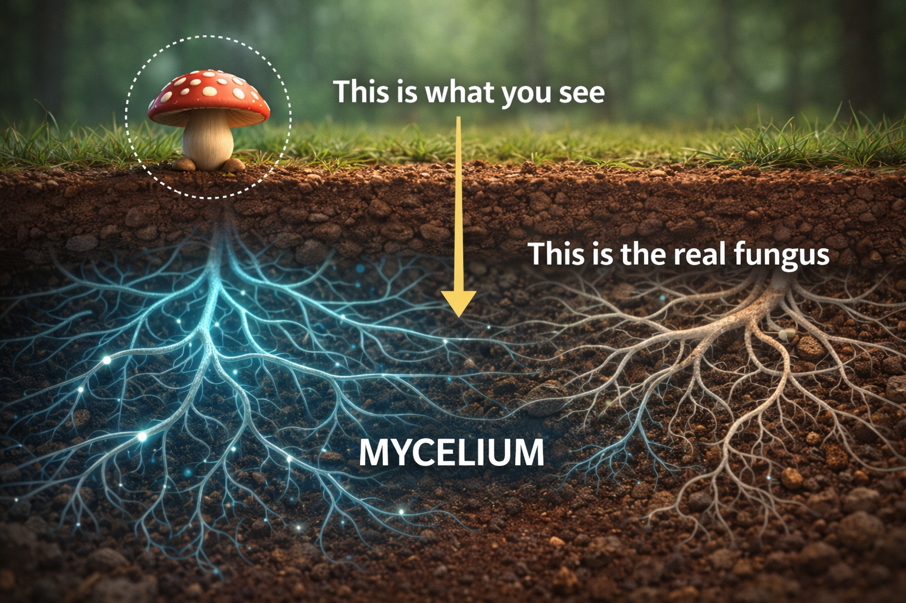
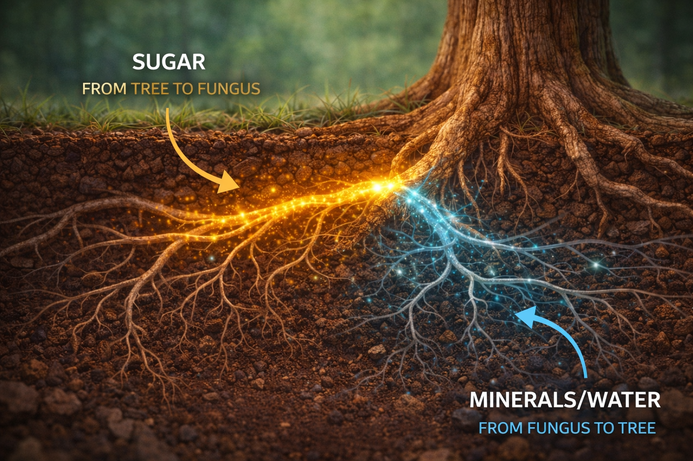

Animated explainer script • 90 seconds • 40% animation, 30% real footage, 30% diagrams
Tone: Wonder, not lecture. "Isn't this amazing?" — never "here are the facts."
Pacing: Quick cuts, punchy narration, visual-first storytelling.
Visual Style: Opens with character animation, transitions to real microscopy/footage and diagrams, returns to characters at close.
Music: Upbeat, curious, builds to awe. Science-show energy meets nature documentary warmth.
Underground in Sillium. Fun-Gus stands at a network junction. Glowing cyan threads branch in every direction. He touches a thread — a pulse of light races away.
FUN-GUS:
Hey! Fun-Gus here. Watch this.
He sends a golden pulse along a thread. It races through junctions, arrives at a distant tree root.
FUN-GUS:
I just told that oak tree it's going to rain tomorrow. Pretty cool, right? But here's the thing — I'm not making this up.
The animated world FREEZES. Dissolves into real microscope footage of mycelium. Animated thread → real hypha.

Real-world microscopy footage of mycelium growing. Time-lapse of threads spreading through soil.
NARRATOR (V.O.):
This is real mycelium — the body of a fungus. Not the mushroom you see above ground. The mushroom is just the tip.
Animated diagram: tiny mushroom above ground, ENORMOUS web below labeled "MYCELIUM."
NARRATOR (V.O.):
Underneath, there's a network of microscopic threads called hyphae — and they connect to tree roots.

Real footage of mycorrhizal root tips. Animated diagram: Sugar arrows from tree to fungus, Water + Minerals arrows from fungus to tree.
NARRATOR (V.O.):
Scientists call this a mycorrhizal network. The fungus gives trees water and minerals. In return, the trees share sugar from sunlight.
NARRATOR (V.O.):
It's a trade. A partnership. And it's been going on for over…
NARRATOR (V.O.):
That's before dinosaurs. Before flowers. Before almost everything.
Timeline graphic. Fungi-plant partnership at 450M years. Dinosaurs at 230M. Humans at 0.3M.
NARRATOR (V.O.):
And the network isn't just for trading food. Trees use it to send MESSAGES.
Animated forest cross-section. Caterpillar attacks Tree A. Chemical signal travels underground to Trees B, C, D, E.
NARRATOR (V.O.):
When one tree is attacked by insects, it sends a chemical warning through the fungal threads. Nearby trees make their leaves taste bitter — BEFORE the insects even arrive.
NARRATOR (V.O.):
And here's maybe the most amazing part.
A large "mother" oak connected to small seedlings via glowing fungal threads. Sugar flows from big tree to seedlings.
NARRATOR (V.O.):
Older trees — scientists call them "mother trees" — send extra food through the network to baby trees struggling in the shade. They feed their children… underground.
Real microscopy dissolves back into the animated world. Real hypha becomes a glowing Sillium thread.
FUN-GUS:
So when I send a message through the network? That's real chemistry.
Cut to Spora, floating nervously, filaments flickering.
FUN-GUS (V.O.):
When Spora learns to connect? That's a real spore finding its place.
Cut to Rhiza, glowing gold at the junction of root and thread.
FUN-GUS (V.O.):
When Rhiza translates between trees and fungi? That's a real mycorrhiza — the living handshake between two kingdoms.
Camera rises from underground, through soil layers, emerging into sunlit forest. A child's rain boot on the forest floor. Tilt up — Birch and Fern. Then camera drops BACK through earth, revealing the full, glowing network.
NARRATOR (V.O.):
Next time you're in a forest, look down. There's a conversation happening right under your feet. It's been going on for 450 million years.
FUN-GUS:
And now you know who's running it.
TITLE CARD: FUN-GUS: THE FOREST HAS WIFI. END CARD: "Search 'mycorrhizal networks' or 'wood wide web' to learn more."
| Claim | Source |
|---|---|
| Trees share up to 40% of carbon via fungal networks | Simard et al. (1997), Nature; Klein et al. (2016) |
| Fungi-plant partnerships are 450+ million years old | Remy et al. (1994), PNAS; Strullu-Derrien et al. (2018) |
| Mother trees feed seedlings through networks | Simard (2021), Finding the Mother Tree |
| Chemical warning signals travel through networks | Babikova et al. (2013), Ecology Letters |
| 1 teaspoon of soil = miles of mycelium | Stamets (2005), Mycelium Running |
| Mycorrhizae connect ~90% of plant species | Brundrett & Tedersoo (2018), New Phytologist |
This video is designed to be paused and discussed:
| Element | Detail |
|---|---|
| Runtime | 1:25–1:30 |
| Resolution | 1920x1080 (16:9) |
| Visual Mix | 40% character animation, 30% real footage, 30% diagrams |
| Voice Actors | Fun-Gus (1), Narrator (1) = 2 voices |
| Music | 1 continuous track (curious → awe → warm close) |
| Graphics | 4 animated fact callouts, 1 timeline, 2 diagrams |
| Stock Footage | Mycelium time-lapse, mycorrhizal root tips, forest canopy, caterpillar |